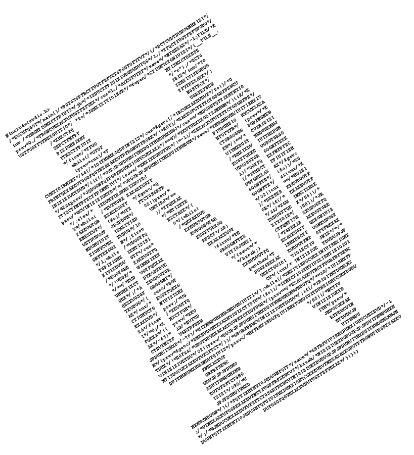

Archived copy of
http://www.karrels.org/Ed/ACM/ec96/index.html
(content as captured 2000-05-17 22:06 via the Wayback Machine) part of the
ICPC contest archive
(
ecna-1996
)
wayback
Not an official ACM page
[
My ACM problem archive
|
my home page
]
ACM East Central Region
1996 Regional Programming Contest
October 26, 1996
University of Notre Dame
Problem Set

(click here for text version)
Problem 1 -- Matching Meetings
Problem 2 -- Supercomputer Selection, The Sequel
Problem 3 -- Polygonal Puzzle
Problem 4 -- Word-Search Wonder
Problem 5 -- MPI Maelstrom
Problem 6 -- Integer Inquiry
Problem 7 -- Enigmatic Encryption
This page maintained by
Ed Karrels
.
Last updated November 6, 1997